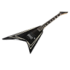
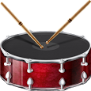

I have more hobbies than coding. I like to play video games. I like to play adventure, rpg, action, and FPS(First Person Shooter) type of games. I also have been learning to play the guitar. Though I have put more attention to video games and coding. I also play sports. I play basketball, soccer, baseball, and football. I play these sports with my friends at school. To conclude not only is coding my only hobbie but also sports, video games, and musical instruments are just other hobbies that I have.
| My Hobbies | ||
|---|---|---|
|  |  | |
| I play the PS2. | I play the guitar. | I play the drums as well. |